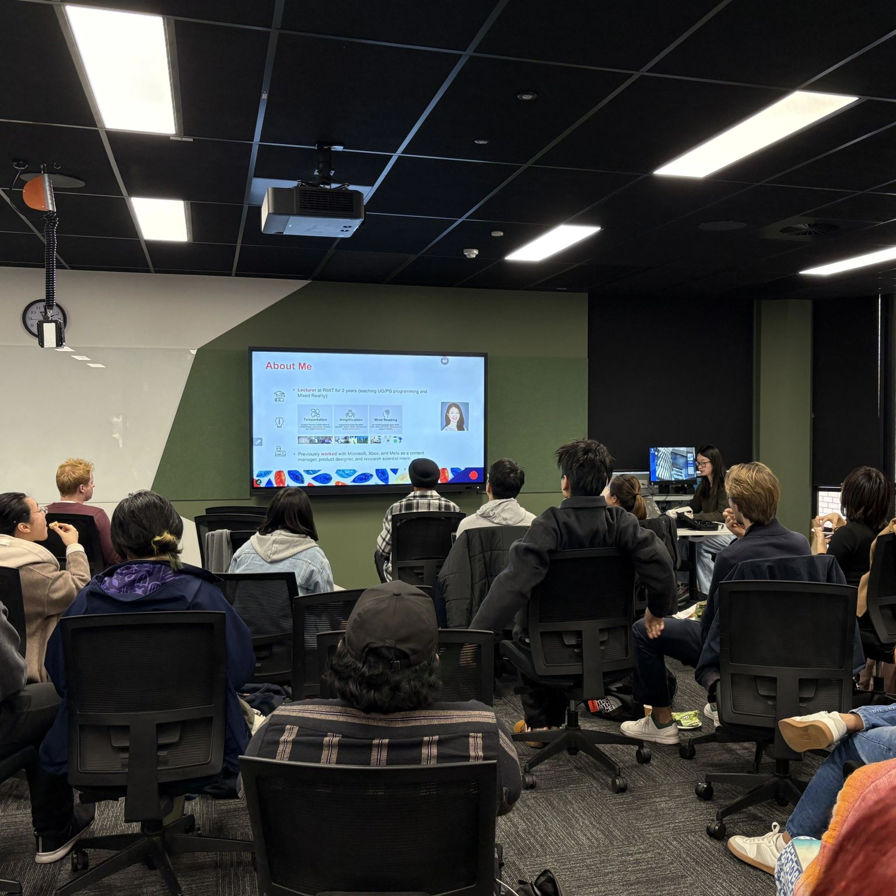
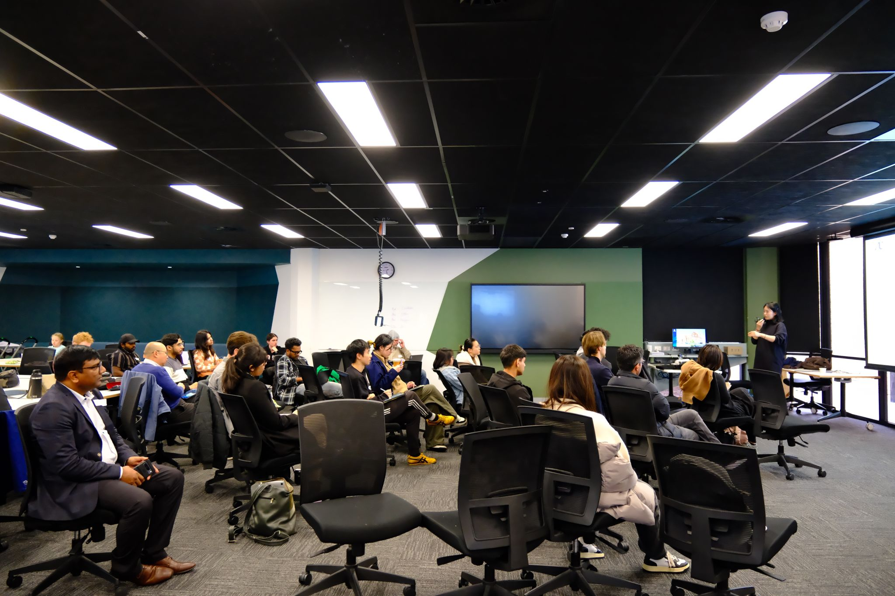
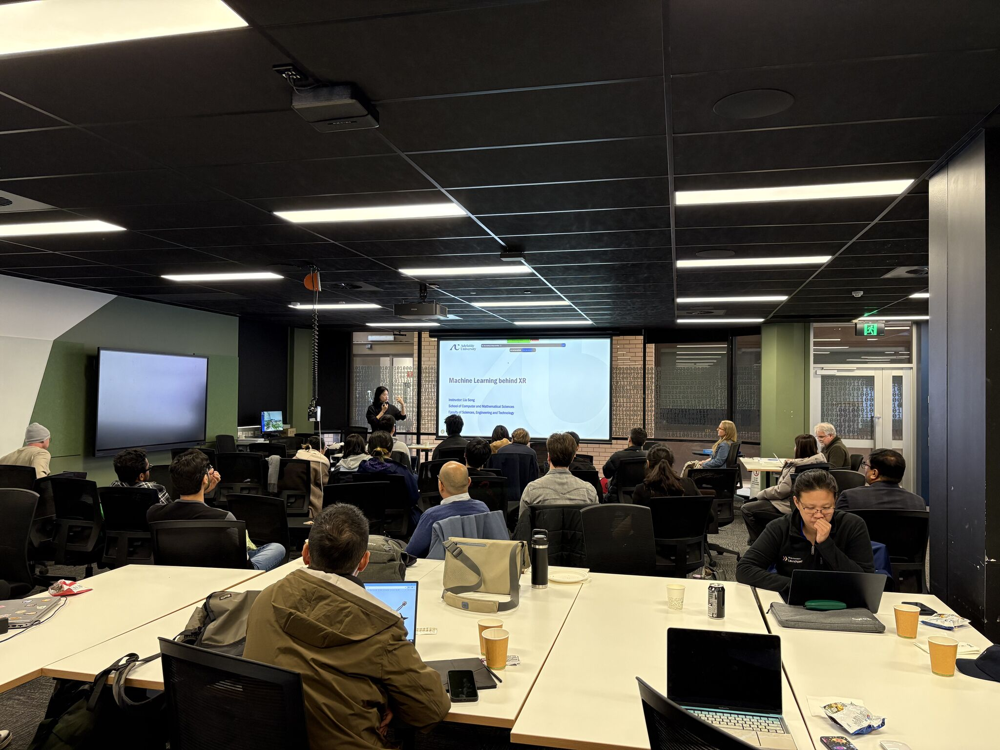
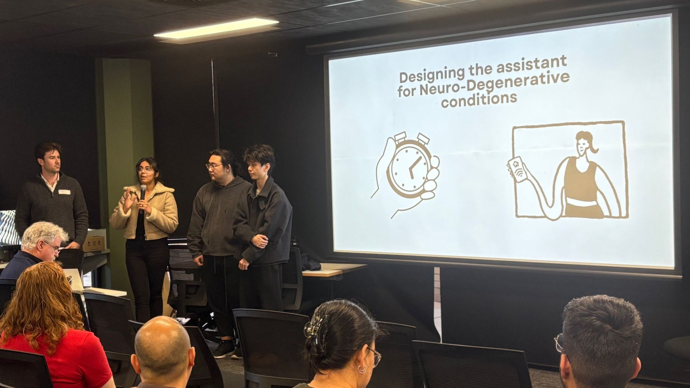
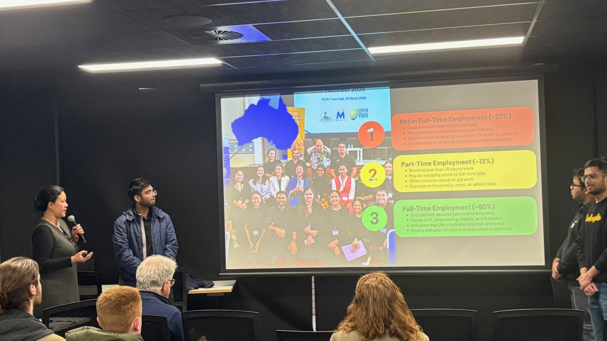
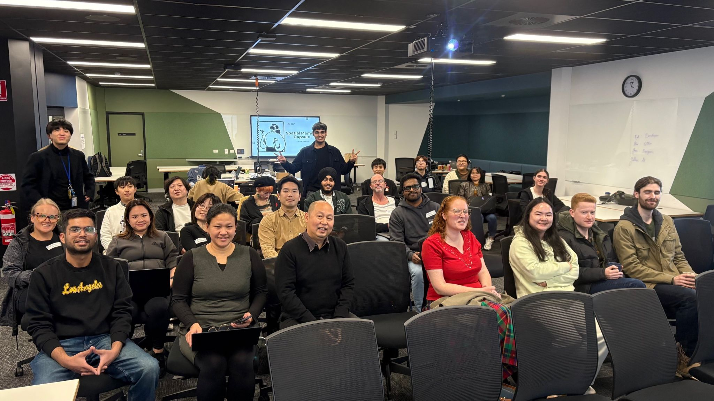
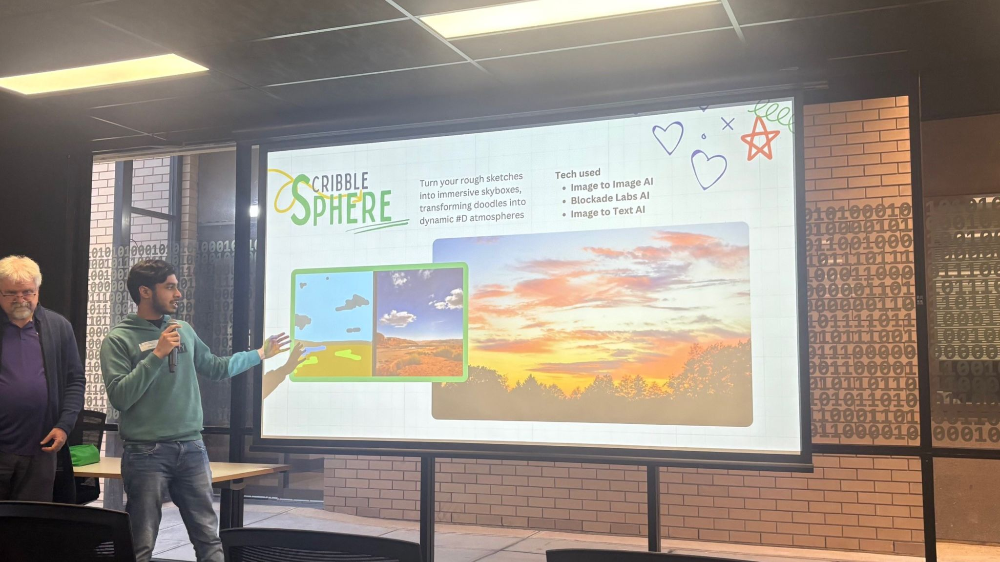

AI4XR Winter School 2025
About the School
- Hands-on learning: Each day mixes short lectures with practical group work.
- No prerequisites: The sessions assume no background in AI, XR, or programming.
- Full-time schedule: Expect roughly 8 hours per day of immersive activities.
- Location: D Building Project Space, Mawson Lakes campus, University of South Australia in Adelaide.
Topics Covered
- XR fundamentals and tools
- Foundations of AI and machine learning
- AI-enhanced interaction and behavior recognition
- AI-driven characters and collaboration
- Large language models and computer vision
- Ethics and future research directions
Resources in This Repository
Feel free to browse the folders above to access the PDFs, presentations, and example notebooks.
Gallery







Watch the Talks
Catch recordings and related videos on our YouTube channel.